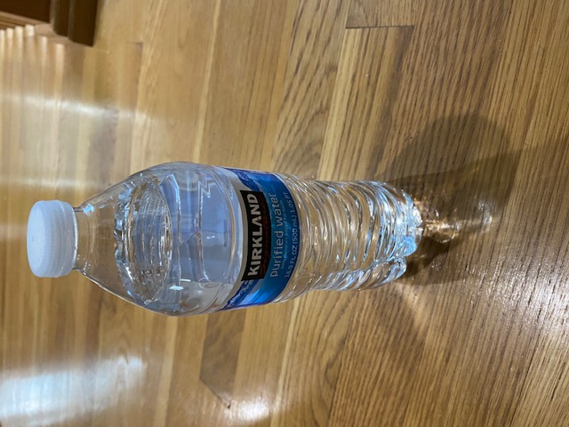

Test Image - 
Output on Microsoft Azure -
Empty bottle on a table
Output on Mobilenet Model -
Water bottle
Result - Mobilenet is more accurate
I have tested 4 images
Mobilenet have predicted all 4 of them correctly, while Microsoft Azure had trouble predicted them correctly and didn't predict a single one.
So, based on my case study Mobilenet is more accurate.